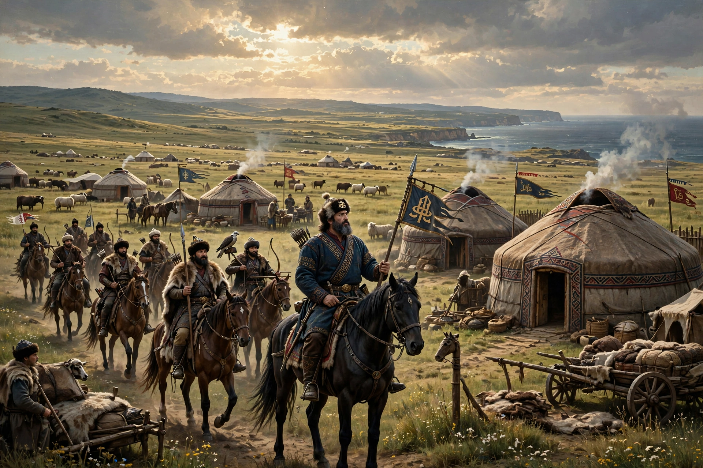

Old Great Bulgaria (Byzantine Greek: ἡ παλαιὰ μεγάλη Βουλγαρία, hē palaià megálē Boulgaría) was a 7th-century Bulgar state formed by the Onogur-Bulgar khan Kubrat on the Pontic steppe north of the Black Sea and the Caucasus, roughly between the Dniester and the Kuban rivers. It existed from about 632 until its collapse under Khazar pressure around 668.
| Old Great Bulgaria | |
|---|---|
 Old Great Bulgaria, c. 650 | |
| Capital | Phanagoria (attributed) |
| Common language | Bulgar (Oghuric Turkic) |
| Government | Khanate |
| Khan | Kubrat (c. 632–665); Batbayan (665–668) |
| Established | c. 632 |
| Disestablished | c. 668 |
Kubrat, raised at the Byzantine court and baptised in Constantinople, united the Bulgar tribes (Onogurs, Kutrigurs and others) after freeing them from Avar overlordship. He maintained a close alliance ("friendship") with the emperor Heraclius and received the title of patrikios. Later chronicles recount the legend of Kubrat's dying advice to his five sons — illustrated by a bundle of sticks that could not be broken while bound together — to remain united; the sons divided instead.
After Kubrat's death (c. 665), his eldest son Batbayan remained in the homeland and submitted to the Khazars. The other sons led migrations that reshaped the early medieval map: Kotrag moved north to found Volga Bulgaria on the middle Volga; Asparuh moved southwest, crossed the Danube and in 681 founded the First Bulgarian Empire in the Balkans; Kuber settled in Pannonia/Macedonia; and Alcek led a group into Avar territory and ultimately to Italy, where Bulgar settlements are recorded around Benevento.
The state is known from Byzantine chroniclers Theophanes and Nikephoros, the Armenian geography, and John of Nikiu. The Pereshchepina treasure, a rich hoard of gold and silver vessels found in 1912 in Ukraine, is widely associated with Kubrat's court.